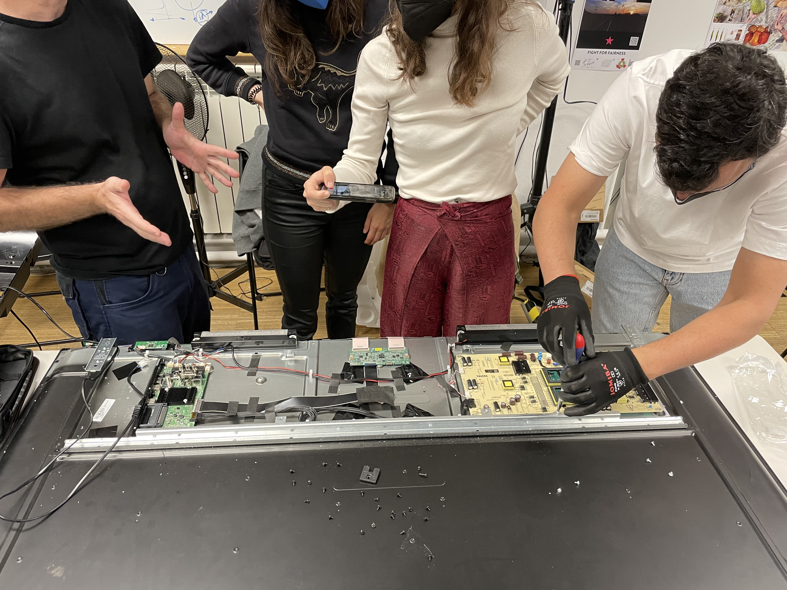
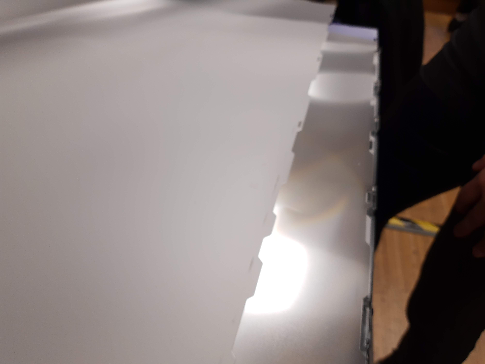
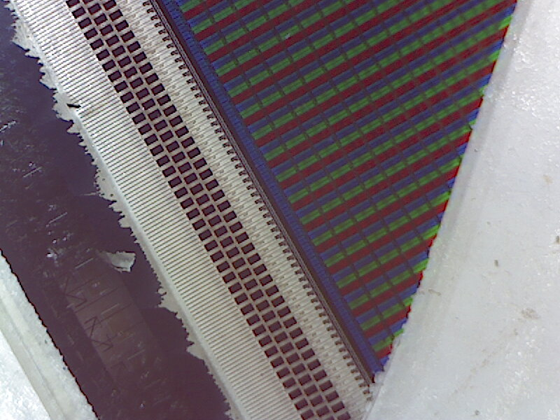
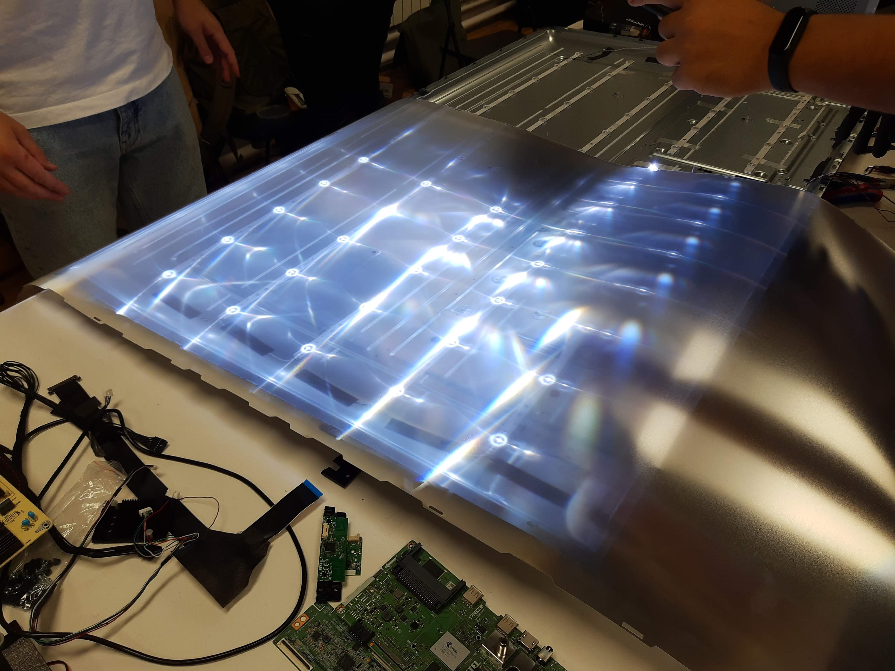
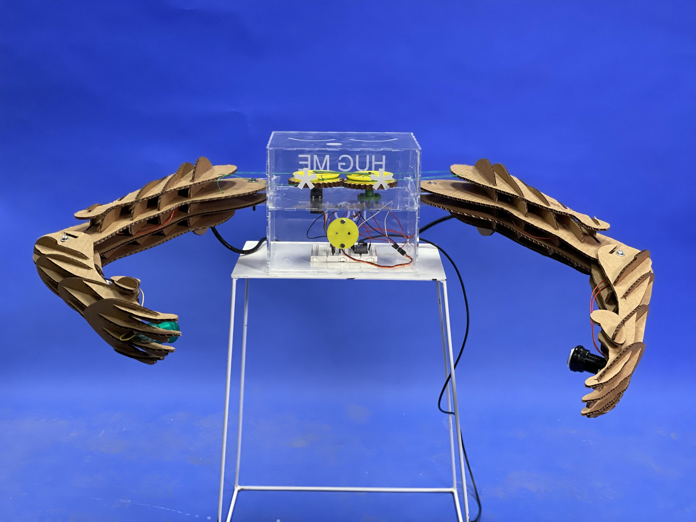
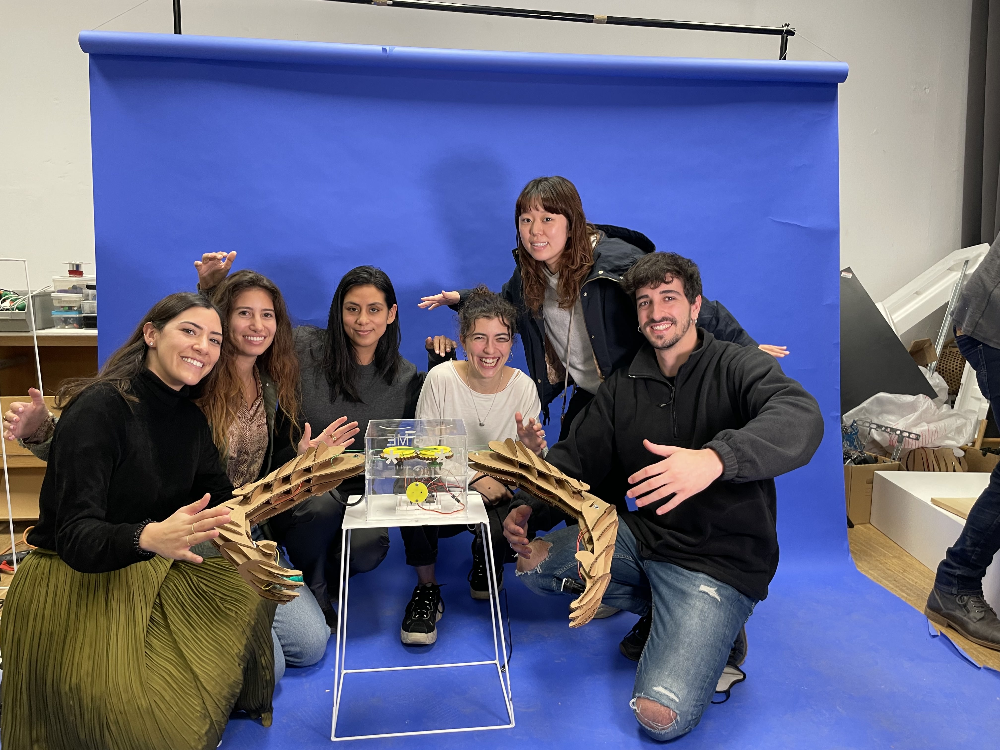

Week 2. Atlas of Weak Signals.
This second week we had the Atlas of Weak Signals course, which analyzes emerging issues that can be assessed and in which way they can be approached. This included a trip to Collserolla.
Read More
November 15, 2021
The issue this T.V. had was in the screen, it was broken and you couldn't see the image clearly.

We opened up the T.V. starting from the back and took a look at all of the little pieces that composed it and made it work. It was definitley impressive getting to know all of the components of a T.V. and what everything does in order to deliver to us an image. We followed the circuits and connections in order to make the forensics report and learn what everything did and the logic behind it. You can read our report in this HackMD file.
After seeing the backpart and descifering what the PCB's did and where all the cables went, we turned it over and dismantled the screen. We realized that it is composed of several screens that helped diffused the light from below and project the image on the screen. The signal came from the backpart through a PCB that read the signal and transmitted the pixels into the screen. We also did a close up with the microscope into the main screen and saw how all the rgb's were lined up. We also saw the leds that were lighting up the T.V.
  In the end we got to open everything and explore all the pieces. It was so interesting to research what some pieces did and where did they come from. We realized most of them came from different brands and countries. We were curious to follow the supply chain and make a map of where all the pieces came from which you can find on our HackMD file.
It is impressive all the amount of work and distribution network built into these electronics that are so common and accesible to us. We absorb the technology immediatly and without consciousness of everything that happens behind stage.
For the second part of the week we set an objective and a hipothesis to work with in order to collect data. We decided to work with growing our own meals at home or in our neighborhood. We were asking questions like why is organic food so expensive, why does fruit is sold in plastic wrapping, what if we got food without paying money, can we have a balanced diet and grow the ingredients ourselves, and many other questions. These questions led to our hipothesis which was: "I can produce the ingredients of my own meals at home or from my neighborhood.

After this we decided to collect our data with the smart citizen kit. This devide captures with sensors different data inputs like noise, light, pollution, humidity and temperature. We went around poblenou placing it in places where we thought could be feasible to grow ingredients or places that are already planting vegetables to use as reference. We went to the rooftop at IAAC, jardins de la merce, connecthort, the cemeteri, jardins de la mariposa and the IAAC entrance. We found it super interesting that when we were searching for places in google maps, we chose the ones that looked green, but when we went there they were concrete areas with some trees. That case happened with a street and the cementery. While we were at the cementery we thought about skipping it because it would be a bit weird to go recollect data there or disrespectful. But then we realized it could be interesting to take into consideration what could happen if instead of having people buried in coffins in concrete structures, they went back to earth and serve as compost to give life to something else. So we went ahead and gathered our data to se how feasible it is to grow veggies or fruit at a cementery. Obviously we need a lot more data and accuracy for this to work well, like analyzing the soil which took us back to the agri zero class and the soil analysis we did.
After downloading all the data from the kit to our computer, we then started to analyze it. We made some graphics in excel which were easier to read and to understand the information we received. We also compared our data to the optimal conditions for certain fruits and vegetables to grow, like tomatos, potatoes, lettuce and avocado. We then got to the conclusion that we can grow certain fruits only in certain places because they met only certain optimal conditions but not all of the required ones. We explain everything more into detail in our HackMD file.
For the second week of the course we started with the almost useful or useless machines. We did a bazar with the pieces from the electronics we dissassembled the first week so we could reuse them in this new machine. We had three options of concepts. One was related to a glass half empty/half full, never filling up causing you frustration. The second was about the feeling of anxiety and desperation when someone gives you a hug but they never touch you. That feeling of anticipation waiting for a moment that never happens. The third concept was about a self boosting self esteem game which always lets you win. We chose to work with the one about the hug.
We then chose the parts we were going to use for our machine and started designing and planning the fabrication and programming we needed for it. We divided into tasks and got to work. I have to say that the most difficult part was organising and defining what we wanted to do and how. When you put together different mind sets and backgrounds you have more possibilities but also a bigger challenge when it comes to decision making. In the end we decided on a concept and started giving life to it.
One of the main challenges we faced is thinking about how to translate our ideas into action. I don't have any previous idea on electronics and very little in fabrication, but Didac and Ana knew a bit more of electronics and made a good team programming and coding. Victor was really helpful and got us to understand the logics of the diagram we needed for the arduino for it to make the robot give a hug when someone was close, but never to touch them. Also we had to program the buttons in the arms that were there if you touched them so the arms could open up. Rei and Fiorella designed, laser cut and assembled the arms, which gave the robot a very cool and strong appearance. Then the box which I laser cut and then assembled once the electronics and gears (mechanism) were ready. We laser cut one of the pieces in cardboard so to see if it was the right dimensions and not have mistakes in acrylic which even tho happened. We had to cut again one of the pieces due to a milimetric mistake. It was also a bit messy my process because I sent a file which I then had to correct on the cutting room computer and didn't save as an updated file, wo when I wanted to cut it again I didn't have the previous corrections. Which led to some mistakes and confusions. In the end the outcome was our hug me not machine, and it worked perfectly. I was actually surprised that in just 4 days we could come up with a machine that works 100%. I really value and appreciate this collaborative work because everyone was super committed to doing their part and they were not afraid to ask for help from other classmates or teachers. We had some moments sof frustration because some things weren't working and then we were running out of time so that added pressure. I have to say I was mostly confident that it will work out perfectly because I trusted my teammates but I was also impressed by how this came to life "all of a sudden". Overall I had so much fun in this process and learnt so much from my teammates and got to know them better.
 We made an amazing video showing how our almost useful machine works. You can watch it below.
I also made another video about this two week course. With this video I documented some of the relevant moments we had while developing our projects. What I found interesting is all the information and insights that get lost in the process while we are in the activity. There is so much relevant information being said and we register some but other just gets lost in our train of thought or action. In a more concise and funny way, I selected a few moments that captured the emotions and expressions of the collaborative work we did. With this I could summarize my experience for this course. I hope you enjoy it!
TBTM-VIDEO from Pau Bustos on Vimeo.
This second week we had the Atlas of Weak Signals course, which analyzes emerging issues that can be assessed and in which way they can be approached. This included a trip to Collserolla.
Read More
Week 3 was the introduction to biology. We learnt about microorganisms all around us and the composition behind them from cells to systems.
Read More
During this first week we got to know each other and the master's program. We learned about our own personal present skills and the future ones we want to obtain as well as our classmate's ones.
Read More